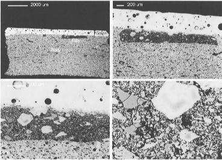

Report on - MINERALOGY OF CERAMICS: ANCIENT AND MODERN
The programme for this one day meeting at the Mineralogical Society in June 1999 was a full one, with thirteen oral presentations and nine posters, covering ceramic science from ancient bricks to modern dielectric ceramics for the telecoms industry. The aim of the meeting was to bring together those interested in using mineralogical methods of analysis to characterise the nature and behaviour of ceramic materials.
The programme of talks was set off with a contribution from I.Freestone (London) on the mineralogy of early British porcelain, in which the use of materials analysis (SEM/EDXA, Scanning Electron Microscopy/Energy Dispersive X-Ray Analysis)) to elucidate attempts in 18th century England to reproduce highly valued porcelain from China were described. This was followed by several more presentations in which SEM/EDXA and also TEM and XRD had been used: Y. Iqbal (Sheffield) on the elucidation of the mineralogy and textural relationships in modern porcelains, M. Tite (Oxford) on the investigation of technological innovations in the manufacture and decoration of Islamic and Iznik pottery, and to conclude the session, a presentation by T. Pradell (Barcelona) on investigations into the nature of tin oxide opacifiers used in medieval tin glazes.
There was an opportunity for viewing and discussion of the poster displays during the interval for lunch. As for the oral presentations, several of the posters described the application of optical and electron microscopy, EDXA and XRD: V. Flores-Ales (Seville) on glazed tiles from Seville, F. Gökalp (Ankara) on archaeological ceramics from the Datca Peninsular, Turkey, L. Joyner (London) on inlays in Korean celadons, M. Mata (Zaragoza) on the recognition of mineralogical changes during the firing of clays at relatively low temperatures, J. Poblome (Southampton) on Roman pottery from Sagalassos, in S.W. Asia Minor, S. Wolf (Fribourg) on the production of large medieval bricks in Switzerland. Other contributions introduced the use of synchrotron X-ray sources (T. Hughes and E. Pantos, Daresbury), and also Mössbauer spectroscopy (W. Häusler, Munich) for the study of archaeological ceramics.
Refractories and their development in the 20th century formed the subject of W. Lee's (Sheffield) presentation, and this was followed by a contribution from O. Stilborg (Lund) on refractories used in a pre-Roman iron smelting furnace. The session continued with three accounts of mineralogical studies of clays and archaeological pottery: B. Sherriff (Manitoba) spoke on a Roman site in Tunisia, A. Türkmenoglu (Ankara) considered pottery from Malatya, Turkey, and A. Lindahl (Lund) described pottery traditions in Zimbabwe. The final session of the day included contributions from R. Freer (Manchester) on the use of electron microscopy and XRD in the characterisation of microstructure in dielectric ceramics used in the telecoms industry, M. Pantos (Daresbury) on applications of synchrotron radiation to the study of archaeological ceramics, and S. Santamaria Dublin) on a study of 17th century Irish brick. The day concluded with a presentation by C. Halls London) on Chinese kaolins, the starting point for some of the finest ceramics ever produced and reminded us that underlying the ceramics industry, past and present is a need for mineral raw materials, whose distribution and availability is determined by geology.
The meeting attracted nearly sixty participants, certainly exceeding early expectations, and thanks are due to the Mineralogical Society and other staff who made us welcome at 41 Queen's Gate. Thanks are also due to the Applied Mineralogy Group, who provided financial support for the meeting and for the production of a set of abstracts [a few copies are still available from the convenor of the meeting, Andrew Middleton, at the address below. ]. Hopefully, the programme provided at least something for everyone, and may have gone some way towards achieving its aim of indicating some areas of common ground between the study of ancient and modern ceramic materials.
Photomicrographs of a Ceramic at increasing magnification

Scanning Electron Microscope (SEM) photomicrographs (back-scattered electron images, used to enhance compositional contrast) of the white inlay (darker in micrographs) in a cross-section of a 12th century Korean celadon. The inlay was pressed into a sharp angular incision in the body, and is covered by a layer of glaze (white in the micrographs). The detail micrographs show the sharp contact with the body, containing numerous, rounded bloating pores and also the granular nature of the inlay. EDX analysis, together with XRD have shown that the inlay was made from an impure kaolinitic clay (converted to mullite during firing), containing quartz and alkali feldspar.
Andrew Middleton,
Department of Scientific Research, British Museum, London, WC1B 3DG,
email: amiddleton@british-museum.ac.uk
 Click here to return to BCA homepage
Click here to return to BCA homepage